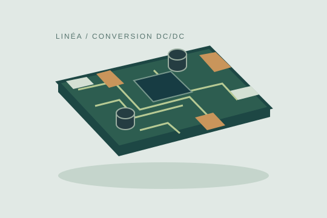
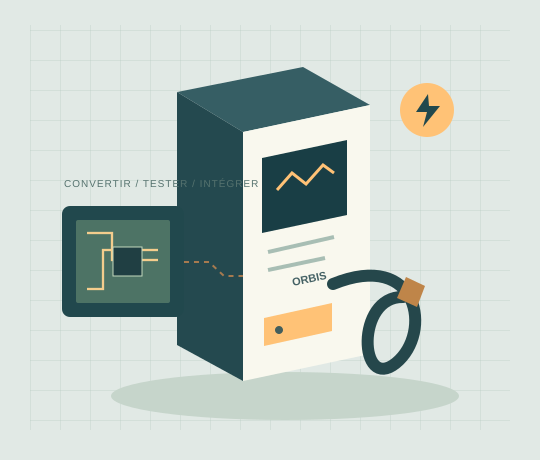

Des contraintes réelles
dans chaque projet.
Trois projets réalisés par nos équipes, du composant à l’équipement en service.
Une alimentation stable malgré une liaison longue.
Le besoin
Le système était installé en hauteur et alimenté depuis un coffret situé au sol. Les variations d’entrée et les perturbations pouvaient affecter son fonctionnement.
Notre intervention
Adapter un module Linéa, définir le filtrage et vérifier le comportement des sorties dans plusieurs conditions de charge.
Les livrables
Schéma, choix des composants, prototype, essais comparatifs et dossier de fabrication. Le résultat attendu était une carte reproductible et documentée.

Recharger pendant les périodes d’immobilisation.
Le besoin
Une flotte de véhicules devait être disponible chaque matin. Le temps de stationnement et la puissance disponible sur le site devaient être pris en compte.
Notre intervention
Intégrer des chargeurs Orbis 30 et valider le fonctionnement avec les véhicules retenus, les échanges de données et le signalement des défauts.
Les livrables
Revue des interfaces, campagnes de tests, compte rendu de compatibilité et préparation des documents pour l’exploitant.

Rendre les contrôles plus reproductibles.
Le besoin
L’augmentation du nombre de cartes assemblées demandait de mieux organiser le contrôle final et la transmission des anomalies.
Notre intervention
Mettre en place des fiches de test liées aux versions des cartes et rapprocher les résultats du laboratoire des contrôles de production.
Les livrables
Travail commun entre électronique, production et qualité ; critères d’acceptation, identification des cartes et suivi des corrections.

Le point commun ?
Vérifier et transmettre.
Des choix techniques compréhensibles, des essais documentés et une fabrication préparée.